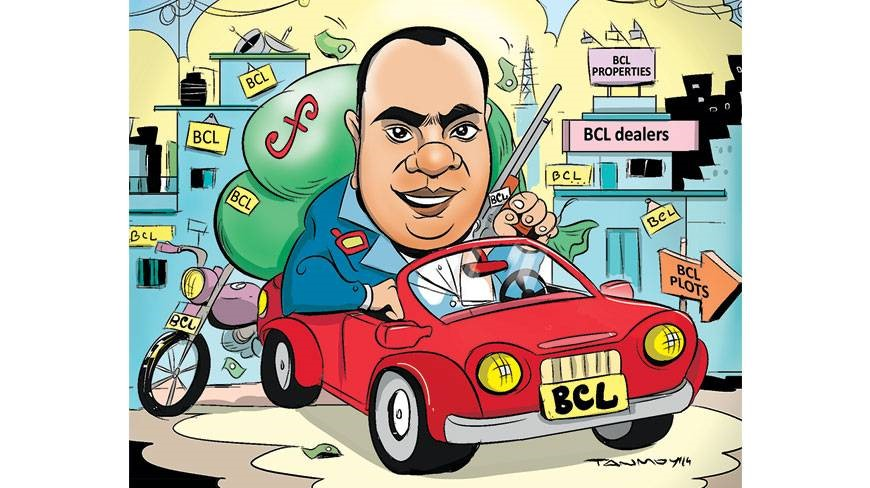

Party posts were like magic lamps for many chhatra league leaders. Here is the second of a series of three reports
General good fortune
Ahmed Zayeef . Dhaka

Chhatra League General Secretary Siddique Nazmul Alam is known by the name Debu to neighbours. He comes from a lower middle-class family in Pathalia in Jamalpur.
Our correspondent has earlier reported that Nazmul had been constructing a three-storey building at his village home, which used to be a brick-walled tin-shed one-storey house.
A neighbour said Nazmul’s father was now the operation-in-charge of the Dewanganj Food Depot in Jamalpur. He used to be a fourth class employee of the government but things changed dramatically after his son became the general secretary of the ruling party’s student front.
When asked, Nazmul told the Dhaka Tribune over phone that his father had begun constructing the house in 1992 and finished it in 2010. The house was given a coat of paint only very recently, which was why it looked new, he explained.
However, a central leader of Chhatra League claimed that he had been to Nazmul’s house and saw a new two-storey building.
Luxury flats in Dhaka
Nazmul himself now lives in a flat in the capital’s posh Paribagh area, for which he pays Tk50,000 rent. Caretaker Kamal Pasha said it was a duplex flat and he had been living there for the last two months.
Nazmul, however, claims that an Awami League leader rented it out to him at half the regular rent.
Sources said Nazmul also rents a luxury flat in the capital’s Old DOHS. Md Joynal Abedin, caretaker of that building, said Nazmul had been living in a 1,400 square-foot flat for the last one year.
“The rent of the flat should be around Tk35,000-40,000 exclusive of the service charges and other expenses,” he said.
According to Nazmul: “The flat is owned by Dewanganj upazila Chairman Ishtiak Didar, who is a cousin of mine. I do not have to pay to live there.”
Bbarta.com
Nazmul is also the publisher of an online news portal named bbarta24.com.
Wishing not to be named, a senior reporter of the portal said it was launched in August 2012. Nazmul became a partner in the beginning of 2013 and later the publisher.
Nazmul said the editor of bbarta.com had once requested him to be the publisher as they thought they could get more advertisements by using his connections. “Then I decided to get involved as I had a plan to be in the media industry.”
He also said: “I helped them get some advertisements but I did not make any investment.”
However, a number of Chhatra League central leaders said Nazmul invested around Tk30-40 lakh to become the publisher.
Wheeler dealerships
Nazmul also obtained a dealership of Symphony mobile phone after he had become Chhatra League general secretary. The outlet is located on the first floor of Beauty Plaza on the Medical Road in Jamalpur town.
Nazmul’s brother Adnan Siddiqui claimed that he owned the business, not his brother. “I started it two months before my brother got the post. Nazmul Bhai does not have any stake in it and he did not help me to launch the business either.”
“State Minister for Textile and Jute Mirja Azam and I acted as references when my brother applied for the dealership. He got the dealership but I did not influence anyone,” Nazmul said.
“People in my position do not need to pursue anyone to get a dealership. An owner of a grocery shop can also get it if he fulfils the requirements,” he added.
A top official of Symphony, however, confirmed that they had given the dealership because of Nazmul in mid-2012 when he got the BCL post.
In similar fashion, Nazmul also managed a motorbike dealership for his uncle by exerting his political influence in Jamalpur, said many local people. His uncle Ashraful Alam Siddiquee however denied it: “I got the dealership three months ago without any help from my nephew.”
Generous allotments
Reportedly, both the Chhatra League president HM Bodiuzzaman Shohag and Siddiqui Nazmul Alam each got allotments of five kathas of land in the government’s Purbachal New Town project.
Nazmul Alam said: “We applied long before and we got the land by fulfilling all criteria.”
Md Anwar Hossain, project director of the Purbachal project, told Dhaka Tribune: “They got the allotment in the government’s reserved quota.”
Arms license
Moreover, Nazmul got license for two firearms last year as a “special person of the state.” One of those arms was a shotgun and the other was a pistol. Nazmul Alam said: “I got the licenses by fulfilling all the criteria.”
Town house
Local people said Nazmul had also bought a house on the Madrasa Road in Jamalpur town last year. The house is located just behind the Tikkapotti Central Post Office and registered in his uncle’s name.
Nazmul said: “I am not the owner of the house. When my uncle purchased it, I gave him a small amount of money as loan.”
He defended himself saying: “I am not an MP or a minister; I do not earn money illegally. As a general secretary of the Chhatra League, I get some money from the Awami League to bear my expenses. Sometimes former leaders of the organisation, some of whom are now abroad, help me. But I get the main financial support from my family.”
New car
Several Chhatra League leaders said General Secretary Nazmul started riding a Toyota Allion the day after he got his post.
The car is registered under the name of a business organisation named Lecture Publication.
Sources said Nazmul had taken a car from the Lecture Publication for making sure that Chhatra League men would never come in the way of its business.
Shahidul Islam, chairman of Lecture Publication, said: “I know nothing about the cars.” He asked this correspondent to talk to Shariful Alam, chief operating officer of the company.
He, however, added: “As far as I know, the car was sold to Nazmul.”
Phone call
This reporter got a phone call from the Chhatra League general secretary. “I have heard that you made a phone call to the owner of my car. You could have called me if you wanted to know anything about my property. There was no need to call other people,” Nazmul said.
About the car, Nazmul said Mehedi Hasan, son of the chairman of Lecture Publication, was his friend.
He also said: “We live in a society. Please do not write anything that will undermine our position.”
Credit Dhaka Tribune, Link: http://www.dhakatribune.com/bangladesh/2014/sep/24/presidential-perks